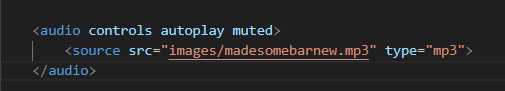

use audio tag, then inside audio tag use source tag with attribute
src="--path of your music file--"
within < audio you can use controls attribute, like autoplay, muted etc...>
will attach a image below :
this is some music produced by me have fun XD
